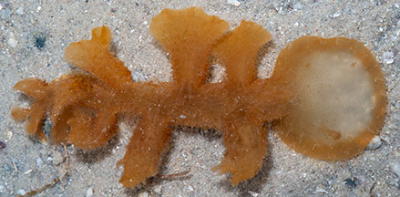
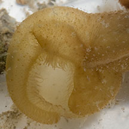
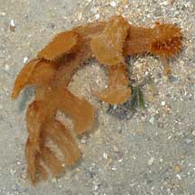
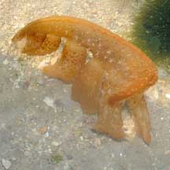
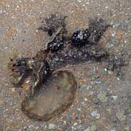
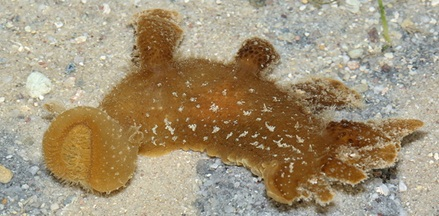
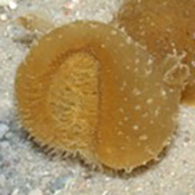

|
|
| nudibranchs text index | photo index |
| Phylum Mollusca > Class Gastropoda > sea slugs > Order Nudibranchia |
| Melibe
nudibranch Melibe viridis Family Tethydidae updated May 2020 Where seen? This large nudibranch is sometimes on among seagrasses. It may be seasonal: when seen, many individuals are encountered. Features: 6-12cm long. Soft body with about 8 large lobes arranged in two rows along the body length. These lobes stick to predators and detach, so please don't handle the nudibranch. Like other Melibe species, it has an expandable hood (oral veil) which it uses to hunt. According to Bill Rudman, this nudibranch has lost its radula and instead has an oral veil that can expand into a "fish net". The veil is used to constantly scan the substrate or to sweep seagrass blades. When the sensitive hairs on the inner edge of the oral veil touch a small crustacean (amphipods, crabs, shrimps), the edge of the veil rapidly contracts, trapping the prey, which is then eaten. It can 'swim', doing so upside down by vigorously bending side-to-side, touching its head to its tail. See Chay Hoon's video clips of the hood in action, and the animal swimming. Its foot is said to be better suited to clinging to seaweeds and seagrasses than for creeping along the ground. |
|
 With hood (oral veil) expanded. Cyrene Reef, Jul 08 |
 Sensitive hairs on the inner edge of the oral veil. Cyrene Reef, Jun12 |
 Cyrene Reef, Apr 08 |
 Swims upside down. Cyrene Reef, Apr 08 |
 Tuas, Mar 09 |
| Melibe nudibranchs on Singapore shores |
On wildsingapore
flickr
|
| Other sightings on Singapore shores |
 Cyrene Reef, Jun 12 Photo shared by James Koh on flickr |
 Sensitive hairs on the inner edge of the oral veil. |
|
| The expandable
hood filmed on Cyrene Reef, May 08 Shared by Toh Chay Hoon on her blog. |
| Swimming! Filmed
on Cyrene Reef, May 08 Shared by Toh Chay Hoon on her blog. |
| Acknowledgement With grateful thanks to Toh Chay Hoon for obtaining the identification from Dr Bill Rudman and posting it on her blog. Links
References
|